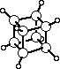

ORTEP-III
Cubane - A Detailed Example
The standard example for illustrating the use of ORTEP is the novel compound cubane
(C8H8),
whose carbon-carbon bonds lie along the edges of a cube within experimental error.
The structure was published in 1964 by E. B. Fleischer (Journal of the American
Chemical Society, Vol. 86, p.3889).
The compound crystallizes with the trigonal symmetry of space group
R. The axis lies
along a body diagonal of the molecule, and as a result the compound contains only four
unique atoms. These are one carbon and its attached hydrogen in
general positions off
the
axis (C1 and H1) and one carbon and its hydrogen in special positions on
the axis (C2 and
H2). Anisotropic temperature factor coefficients were fitted to the carbon atoms during the
least-squares refinement of the structure, and isotropic temperature factors were used for the
hydrogen atoms. The anisotropic temperature factors given for the carbon atoms are of the
type called 0 in ORTEP.
To draw the structure the following information is needed:
Cell Parameters:
a = b = c = 5.34 Å
 =
=
 =
= 72.26o
=
= 72.26o
Equivalent Positions of Space Group R:
x,y,z z,x,y y,z,x -x,-y,-z -z,-x,-y -y,-z,-x
Positional Parameters (x,y,z in fractional parts along unit cell edges):
C1 -0.18711 0.19519 0.10706
C2 0.11546 0.11546 0.11546
H1 -0.32460 0.34680 0.18480
H2 0.21000 0.21000 0.21000
Anisotropic Temperature Factor Coefficients
(b11,
b22,
b33,
b12,
b13,
b23)
C1 0.0410 0.0425 0.0450 -0.0042 -0.0142 -0.0050
C2 0.0468 0.0468 0.0468 -0.0143 -0.0143 -0.0143
The first line of input is a job title.
CUBANE E.B.FLEISCHER 1964 J.A.C.S. 86, 3889
Cell parameters
are provided on the second line. The "1" in the first column
signals the format of the symmetry information that follows.
1 5.34 5.34 5.34 72.26 72.26 72.26
The symmetry operators
of the space group begin on line 3 of the input.
The last of these has a "1" in column 1.
x, y, z
z, x, y
y, z, x
-x, -y, -z
-z, -x, -y
1 -y, -z, -x
Two lines provide the atomic parameters for each atom. The first gives the atom's
positional
parameters, and the second provides its
thermal parameters. The
last atom has a "1" in column 1 of its thermal parameter card. Atoms are referenced in the
instructions by their numeric position within this list.
Atoms 1 and 2 are entered with positional parameter type 0 and anisotropic temperature
factor type 0.
C1 -.18711 .19519 .10706 0
0 .04100 .04250 .04500 -.00420 -.01420 -.00510 0
C2 .11546 .11546 .11546 0
0 .04680 .04680 .04680 -.01430 -.01430 -.01430 0
Atoms 3 and 4 are entered with positional parameter type 0 and with dummy sphere
temperature factors (type 7) with a radius of 0.1 Å before scaling.
H1 -.32460 .34680 .18480 0
0 .10 7
H2 .21000 .21000 .21000 0
0 .10 7
A dummy atom (atom 5) at the cell origin is also included with a blank card dummy
sphere. This could also be entered with type 7 as were atoms 3 and 4.
ORGN 0 0 0 0
1 0
The 100 instructions are neither associated with nor required for producing an illustration.
They are shown here to demonstrate how they are used.
A 101 instruction
is used to obtain a
tabulation of the atoms surrounding one atom or a series of several designated atoms. For
example, to obtain a list of all atoms (hydrogen and carbon atoms) out to a distance of 3.61
Å about the two carbons C1 and C2, the following 101 instruction would be used.
101 155501 2 1 4 3.61
|_______________| |__________| |____|
(a) (b) (c)
where the parts designate:
(a) origin atoms 1 through 2 of symmetry operation 1
(b) target atoms 1 through 4 of all symmetry and translation operations
(c) a distance Dmax of 3.61 Å
A 102 instruction
gives both interatomic distances and interatomic angles. The
following instruction could be used to find all covalent bonds and bond angles about the two
carbons.
102 155501 2 1 4 1.8
In this case a smaller Dmax
was used so that only the distances and
angles of immediate interest would be computed since there are n(n - 1)/2
angles for n interatomic vectors about an atom.
Plotting is initialized with a 201 instruction.
201
The two plot boundary dimensions can be equal for the present illustration since the
cubane molecule is a cube. A 5
5 inch boundary is specified with a 0.5 inch margin to
give a 4
4 inch square working area. A
15 inch view distance might be reasonable to use
in viewing a model of this size. These are set with the
301 instruction.
301 5.0 5.0 15. 0.5
The subject of the illustration is a single complete cubane molecule. Since all the
atoms of the molecule were not provided in the input atoms list, the "missing" atoms may be
found by using the 402 instruction
to specify a
sphere of enclosure,
centered on the dummy atom 5,
which is at the
center of a cubane molecule. A radius of 3.2 Å should be adequate to find all the atoms and
isolate a single molecule.
402 555501 5 1 4 3.2
|_______________| |__________| |___|
(a) (b) (c)
where the parts designate:
(a) a run of origin atom(s) representing sphere centers
from atom 5 to atom 5 in symmetry
position 55501 (in this example, a single sphere)
(b) a run of target atoms from atom 1 to atom 4
(c) a sphere radius of 3.2 Å
The 501 instruction
is used to establish a coordinate system in order to orient the molecule.
In this case, the coordinate system is defined along the edges of the cubane cube.
The origin will be positioned on the dummy atom 5. The
desired coordinate system orientation will be defined by specifying two vectors from the
special position atom 255501 to the two symmetry-related general-position atoms 155501
and 155502.
501 555501 255501 155501 255501 155502 0 0
The 502 instruction
is used to rotate the molecule relative to the
established coordinate system to optimize the appearance of
the illustration. A rotation of
25o about the y axis (axis 2)
followed by a rotation of 28o
about the x axis (axis 1) will produce a satisfactory view of the
molecule.
502 2 25. 1 28.
To position and scale the subject for projection onto the
"drawing board" and to utilize
all available space, a 604 instruction
is used, which will automatically set X0, Y0, and SCALl.
However, the ellipsoid scale factor ratio SCAL2 must be specified independently.
A value of -50 will provide thermal ellipsoids
corresponding to 50% probability as ORTEP sets the value of
SCAL2 to 1.54. (If the value supplied is positive, ORTEP interprets the
value as SCAL2. If the value is negative, ORTEP interprets
the value
as a probability and sets the appropriate value of SCAL2 automatically.)
604 -50
The stereoscopic rotation for the left eye can be done at this point with the
503
instruction. A rotation of 2.7o
about the y axis (axis 2) is used for the left-eye view. Later in the program, a
-2.7o rotation
about the same axis will be made for the right-eye view to give a total interocular angle of
5.4o.
503 2 2.7
Since the structure will be drawn twice, once for each eye, the
save sequence
feature can be used to shorten the program. Note that the instructions between the start
(1101) and end (1102) instructions are both executed and saved the first time through. They
can then be re-executed as many times as desired by using the "execute save sequence"
instruction 1103.
The 1101 instruction starts the save sequence.
1101
The 1001 instruction (or 511)
stores the information needed for the overlap hidden-line
correction (i.e., as a projected boundary ellipse for each atom and a quadrangle
approximation for each bond). The bonds are specified with a Format No. 2 trailer card
identical to that used in the 812 instruction described below.
2 1001
1 4 1 4 4 0.9 1.6 .04
The ATOMS array currently contains all the atom designators for one cubane
molecule. The molecule is drawn in two separate steps so that the hydrogen and carbon atoms
can be given different graphical representations. To draw the carbon atoms
(ANR = 1,2), a
standard model produced with the new
706/716 instruction is used.
[This model is the same as that produced with a
705/715 instruction that (a) draws the three principal-plane forward traces and the
boundary-plane trace (NPLANE = 4), (b) omits the reverse sides of the principal planes (NDOT = 0),
(c) draws the forward principal axes without additional shading (NLINE = 1), and (d) omits
the reverse principal axes (NDASH = 0).] In addition, chemical symbols are drawn with letters
0.12 in. high (before projection) and displaced from the atomic center by 0.3 in. horizontally and
0.4 in. vertically.
1 716 .12 .30 .40
1 2
The 716 instruction is used, rather than 706, to shorten the output listing of the
example. A 706 instruction would provide a listing of all coordinates.
The hydrogen atoms (ANR = 3, 4) are to be drawn with a different standard
model (instruction 702/712)
than the carbon atoms. Chemical symbols are 0.12 in. high and offset 0.25 in. horizontally
and vertically.
1 712 .12 .25 .25
3 4
The most convenient procedure for drawing bonds is to use the implicit bond
instruction 812.
All other information can be entered with a single Format No. 2 trailer
card.
2 812
1 4 1 4 4 0.9 1.6 .04
|____||____||_| |_________| |___|
(a) (b) (c) (d) (e)
where the parts designate:
(a) origin
atom number run of atoms
making up one member of bond atom pairs to be drawn
(b) target atom number run of atoms making up second member of bond atom pairs
(c) bond type 4
(d) the distance range 0.9 to 1.6 Å that will cover all covalent bond
distances
(e) the bond radius is 0.04 Å
The remaining fields on the card can be blank, since a complete set of bond distance
labels is not desired.
The last feature of the illustration is the labeling
with 900 instructions. Because of the
symmetry, there are only two different C-C bond lengths in cubane. These are C1-C1 and
C1-C2. One example of each of these bonds will be labeled. For variety, one will be labeled
with a normal bond-length label and the other with a perspective label. The two bonds that
can be labeled most advantageously are 155504-155503 and 255504-155505. The labels
will be 0.12 in. high and displaced vertically from the bond center by -0.4 in.
906 155504 155503 .12 0 -.4
916 255504 155505 .12 0 -.4
Finally, a caption for the illustration is drawn. This can conveniently be positioned by
"hanging" it from the dummy atom 555501 and "bouncing" it 3 in. from the left x
boundary and 0.5 in. from the lower y boundary. The caption is 0.2 in. high.
3 902 555501 3.0 0.5 .20 0 0
Cubane
The save sequence is now terminated.
1102
The plotting origin is then shifted 4 in. along x
with a 202 instruction
in preparation for the right-eye view.
202 4.0
The stereo rotation of -2.7o
about axis 2 is now performed for the right-eye view
with a 503 instruction.
(Note that this rotation starts with the reference orientation,
not the previous working orientation.)
503 2 -2.7
The save sequence
can now be repeated for the right eye. (Note that the ATOMS
array now contains the same information that it did when the first view was drawn.)
1103
Plotting is terminated with a
202 instruction
with no parameters.
202
Finally, a -1 instruction terminates the program.
-1
 ORTEP-III Home Page
ORTEP-III Home Page
Page last revised: